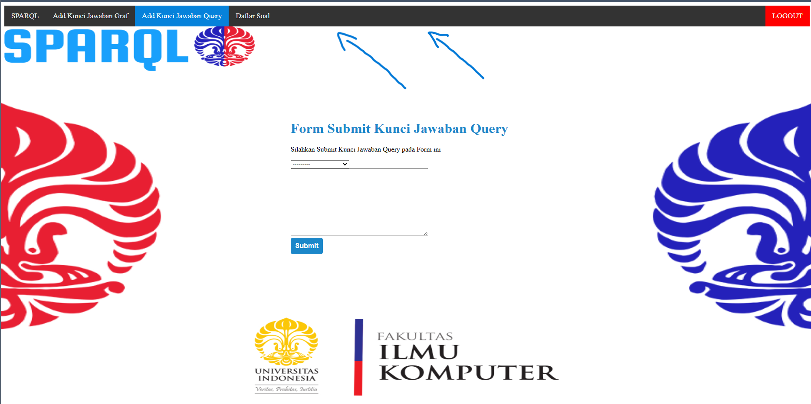
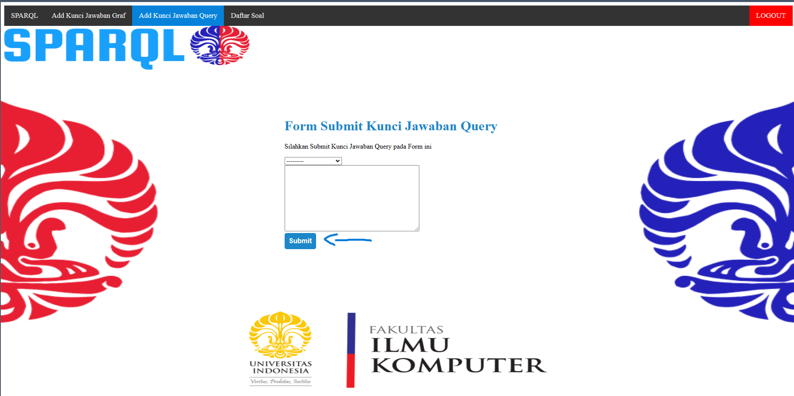
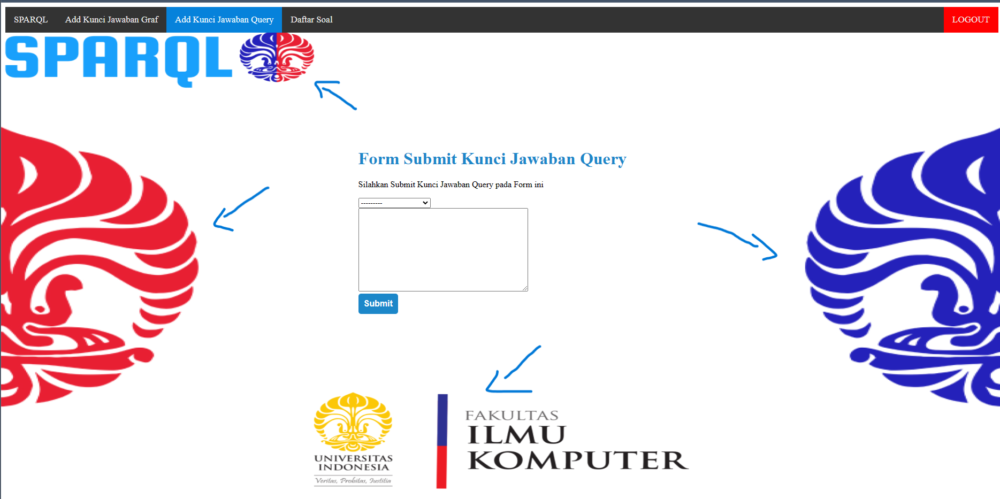

On this section i will focus on what i did on my project spesifically about the UI standarization.
So, on my project i am the one who build the wireframe and for now i'm also taking the tasks that related to the UI or you may say it Front End of the project. UI standarization from what i know is where you make or create the design guideline such as color, overall looks, assets, etc. So far i have shared the assets like background pictures and other assets to my team on figma. So my team can also access it if they want to take the task that related to UI itself or Front End of the project. So far the design is quite simple so there aren't many assets that can be used on the project itself.
Okay, now let us talk about what is UI standarization and what did i do to standarize our UI on the sparql project.

Fisrt, we can see the picture above and take a closer look to the navbar element. Okay, on this project as the wireframe builder i'm responsible to give an example to my other team member about how will our project look like of course in UI wise. what i did is i make an example such as the navigation bar so that the other member can also use the template for the other page that they work on. For example, our team build a new page for new functionality, so we can use the navbar templates and use it to that page.

Second, now we can also look again to the picture and focus on the button. The button is also one of the component that can be used again for the other page. Same as the navbar i also make the overal look of the button so it will match to our design. This is also one of a component that i create to standarize the UI o our project.

Third, The overall background look. As we can see there is a couple of component on the background such as our faculty logo, etc. Those are also component that i create to make our overall project design keep at the same standard level.